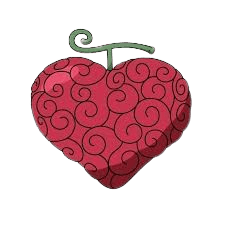

-  Ope Ope No mi
Le Ope Ope No mi est un Fruit du démon de type Paramecia qui permet à son utilisateur de créer une sphère d'aura bleue claire translucide, où l'utilisateur peut contrôler comme bon lui semble le placement et l'orientation des objets et des êtres vivants à l'intérieur.